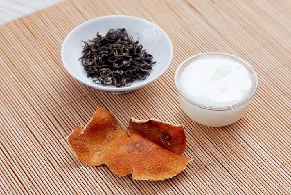
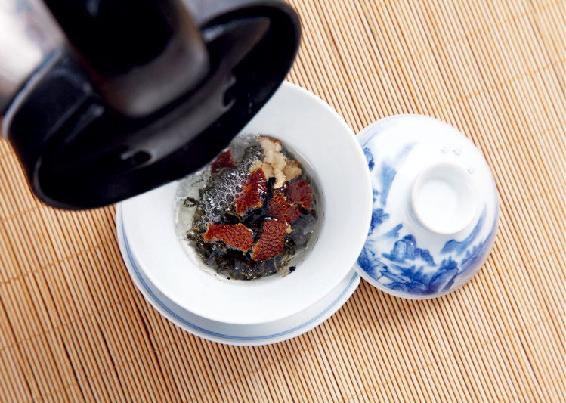
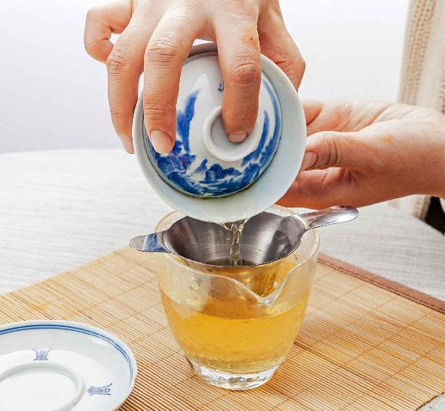
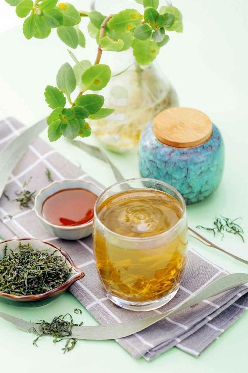
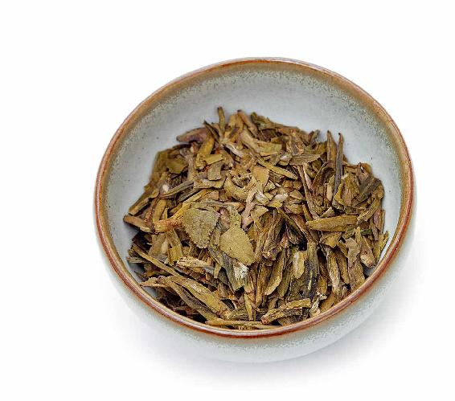
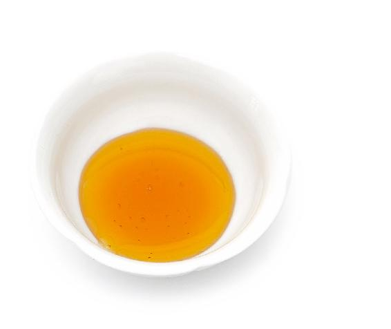
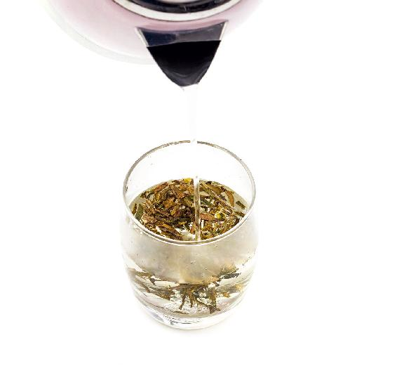
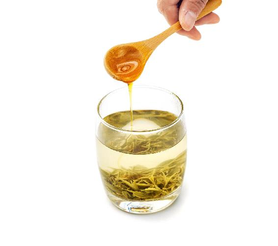

春天除了要养肝、清肝之外，我们还要养心，要让心情保持舒畅，要尽情地领略春天的风光。
进入谷雨节气，还有半个月就到夏天了。古人对这十五天的时间特别珍惜，可以说是一天一天地数着在过。因为这个时候天气和暖，春光明媚，有百花可赏，有新茶可品，再惬意不过了。元代诗人方回曾写过一首描写谷雨节气风物的诗：“芍药抽红锐，荼蘼（mí）缒（zhuì）绿长。几家蚕落纸，比屋燕分梁。谷雨深春近，茶烟永日香。诗成懒磨墨，拄杖画苔墙。”诗里不仅描写了谷雨节气的风物，还隐含了几种我们日常可以用得到的中药。
“芍药抽红锐”，芍药在谷雨期间是含苞待放的，将要开花了。而到了秋冬季节，它的根是调理我们身体的好药。
芍药根的中药名字仍叫芍药，它是柔肝、养肝的。芍药分两种：一种叫白芍；一种叫赤芍。
我们平时用得很多的中成药里都会用到芍药根。春天人们欣赏的是芍药的花，到了秋冬才来用它的根。芍药根是酸性的，适合在秋冬用。
我们要知道，大自然在应季的时候所产出的东西，都是在当时当令可以养人的，如果不是在应季的时候产出，那就说明此时不适宜食用。
因此，谷雨节气要想用到芍药的养生功效，就是欣赏它的花，让我们的心情愉悦。
关于荼蘼，《红楼梦》里麝月抽到的花签是“开到荼蘼花事了”。荼蘼花是春天开得最晚的花，一旦我们看到荼蘼开花，就知道春天要过去了。
荼蘼的花和果也是有药性的。荼蘼的花有一种芳香的味道，可以疏肝行气。所以古人常会在荼蘼花开的时候，坐在花下赏花、喝酒，利用荼蘼花的香气来疏理自己的肝气。
什么是蚕落纸呢？谷雨节气正是开始养蚕的时候，气温比较高，蚕宝宝比较容易被孵化出来。
养过蚕的朋友都知道，蚕是在棉纸上产卵的。谷雨前后，您可以去买这样的蚕纸回来，让蚕卵在上面自然孵化，孵化之后再把它移到铺有棉纸的笸箩里，让它开始吃桑叶长大。这个养蚕的过程就称为蚕落纸。“蚕落纸”描写的就是谷雨前后养蚕人家忙碌的景象。
孵化蚕卵之后的那张纸上面，又密密麻麻地布满了蚕卵壳，这张布满蚕卵壳的纸是一味中药，它名叫作蚕退纸，意思是纸上面有蚕蜕。
蚕退纸有什么作用呢？它可以消炎、止血，比如，痔疮出血、吐血、流鼻血、牙龈出血等。
蚕退纸还可以调理牙痛。
古人在写诗的时候，对于自然、社会的观察是非常细致入微的，而且都是应季应时的。如果我们潜心地去读他们的诗句，会读出美妙无穷的知识。
这首诗里最关键的一句是“谷雨深春近，茶烟永日香”，特别是“茶烟永日香”，真是太妙了。
1.谷雨时节的新茶，为一年四季中最好的
谷雨期间上市的新茶是古人一年的盼望，爱喝茶的人是不会错过谷雨节气的新茶的。这个时候，人人都会来品新茶。
谷雨上市的新茶，是一年四季中最为独特的，滋味非常清润，而且甘甜的味道最为明显，不像夏茶那般苦涩。什么原因呢？这是因为茶树头茬发出来的新芽，营养非常丰富，茶氨酸的含量很高。
茶氨酸是茶叶中所含有的一种非常独特的氨基酸，这种氨基酸的含量是决定茶叶品质的一个关键因素。
茶叶就像咖啡一样，也是一种提神的饮料。世界上有三大提神的饮料：茶叶、咖啡和可可。
茶叶跟咖啡一样，都是含有咖啡因的。但喝茶和喝咖啡有很大的不同，喝咖啡会越喝越兴奋，甚至有的人早上起来喝完咖啡后，会觉得心跳加速。但喝茶不会让人兴奋，相反，它会让人越喝越安静，进入一种非常专注又静心的状态。这是因为茶叶中含有茶氨酸，茶氨酸既能让人放松，解除身心的疲劳，又能提高人的注意力。
我们喝茶之后，特别是喝谷雨时节上市的新茶，是非常适合工作、学习和思考的。因为这个时候人处于一种既安定又专注的状态，大脑的思考能力和记忆能力都得到了增强。
不管是明前茶，还是雨前茶，这两种茶的茶氨酸含量都是非常高的，很适合在谷雨节气喝。
2.平时怕绿茶寒凉，谷雨时可以饮新茶
春茶相比较其他季节的茶不那么寒凉。虽然绿茶普遍偏寒凉，但谷雨时节的新茶，它的凉性没那么强，因为它的茶碱含量没有那么高。所以平时怕绿茶寒凉的朋友，想喝绿茶可以在谷雨时节喝点新茶。
绿茶也有平肝的作用，对于肝阳上亢的朋友来说，在谷雨节气也可以适当地喝一点新上市的绿茶。新茶里茶氨酸的含量很高，可以调节血压。对血压高的朋友来说，它能发挥降压的效果，但它却不会降低正常人的血压，这是绿茶跟降压药所不同的地方。
对于血脂高的朋友来说，这时候喝绿茶能调节人体的脂肪代谢，帮助我们在夏天到来之前降一降血脂，消除一下身体多余的脂肪，摆脱一些赘肉。
绿茶对于预防脑卒中和阿尔茨海默病也是有帮助的，它还能延缓人体的老化过程。
元代诗人仇远的诗“谷雨宜晴花乱开，一壶春色聚书斋”，这里的一壶春色，煮的就是谷雨的茶。
谷雨时节，如果您外出赏花回来，不妨沏上一壶谷雨新茶，在书房里静静地看一会书，这种感觉是非常美妙的。
谷雨节气，很多朋友容易皮肤过敏——发红、长小红疹，尤其是长在面部。在古代，这被称为桃花癣。
农历三月，桃花盛开，所以农历三月也被称为桃月，但这也是很多女性朋友苦恼的一个月。因为空气中花粉的浓度非常高，有些女性朋友就会皮肤过敏，有些人还会得过敏性鼻炎。其实，无论男女都有可能得过敏性的皮肤病和鼻炎。
在谷雨节气，一些朋友的皮肤过敏很有特点——可能其他地方都没过敏，但眼皮上面发红了，有时候是红肿，有时候会长出小红疹，而且很痒，这种过敏症就跟肝火有关系。
眼皮上面是跟肝有关系的一个部位。肝火旺的朋友在这个节气尽量多吃一点油菜花蜜，可以很好地清肝火，防止皮肤过敏。
如果您在春天的前两个月养生功课没做彻底，随着天气渐渐向夏天过渡，逐渐变热，您可能会肝阳上亢或者上肝火等，出现以下四个方面的症状。要避免这些问题，我们可以在谷雨节气喝新上市的绿茶。
1.中老年人容易血压升高
暮春时不仅血压容易升高，而且还是不稳定的，可能今天突然高了，过两天又下去了。这样的反复波动，对身体是非常不好的。
2.女性容易出现经前期综合征
这时候，女性在月经前期会感觉烦躁、紧张，情绪起伏很大。有些女性月经之前会感觉到乳腺胀痛比平时更明显，甚至有的还会出现腹胀或者拉肚子的现象。
3.精神不振
有些朋友会感觉精神上有些烦闷，注意力不够集中，容易疲劳；学生下午学习很难集中精神。
4.上火
很多朋友在这时候容易反复地上火，比如眼睛发红、咽喉疼痛等；有些小朋友会发现脸上的青春痘更严重了。
读者评论：喝了几天清肝养脾茶，发现腰都瘦了一点
一丹_k：喜欢喝清肝养脾茶，先把陈皮煮水然后冲绿茶，喝了几天感觉身体很舒服，能多吃一碗饭了呢。
郭志超：我睡眠不好，不敢用绿茶，只喝了陈皮蜂蜜茶，感觉喉咙很舒服，谢谢老师！
果子_hj：上午喝了清肝养脾茶，晚上喝了柠檬蜂蜜茶，都很好喝，油菜花蜜真不错。
娇_yp：每天去公司的第一件事就是泡杯绿茶，晾温，加入油菜花蜜，我的油菜花蜜是自己去养蜂人家打的，加在茶里味道特别好，茶的味道特别醇厚，带点甜味，非常好喝。
米朵儿_：这几天喝了绿茶陈皮蜂蜜水，发现腰都瘦了一点，真是喜出望外！便便也畅通了很多。
谷雨节气是春天的最后一个节气，之后就要进入夏天了。在这春夏过渡的十五天，我们的养生重点要特别注意预防肝阳上亢和上肝火。
谷雨期间，我们可以喝一道清肝养脾茶。
喝清肝养脾茶可以养脾胃，帮助肝脏排毒，预防在谷雨节气上肝火。这道茶适合大多数朋友在谷雨节气饮用，它是比较平和的。
哪些人更适合喝呢？平时脾胃比较虚弱的人，还有老年人。他们平时单独喝绿茶可能会胃寒，但谷雨节气是一个喝绿茶非常好的时节，配上陈皮和蜂蜜之后，会缓解绿茶的寒凉。
油菜花蜜是这道茶饮中的要点。为什么呢？因为不同的蜂蜜对我们身体的作用也是有区别的。
清肝养脾茶

原料：绿茶6克，陈皮半个（如果是从药店购买的，量要加到15克），蜂蜜1~2勺（油菜花蜜最好）。

做法：
1.把陈皮用清水泡软，切成丝或直接撕成小块，放入茶杯中和绿茶一起用开水冲泡。

2.把冲泡好的茶水倒入空杯中，晾温，加蜂蜜调匀饮用。
允斌叮嘱：
这道茶饮可以反复冲泡几次。冲泡好的茶水一定要晾温后，晾到40℃左右再加入蜂蜜，这样才不会破坏蜂蜜中的一些活性成分。
油菜花蜜是一种很适合在春天喝的蜂蜜，它可以保肝。
请注意，保肝不是补肝，肝其实是不适宜多补的，补过头就会出问题，比如，容易补出肝火。肝应该以保养、排毒为主。
春天的时候，我们喝油菜花蜜有保肝的作用，可以清肝毒，帮助调节肝脏的功能。对一些血脂高的朋友来说，油菜花蜜也是非常好的保健品。
油菜花蜜还特别适合皮肤过敏的朋友吃。有些皮肤过敏的朋友是不敢多吃蜂蜜的，但油菜花蜜相对来说就比较好。
春天来了，油菜大面积地开花，这个时候去买蜂蜜，可以说非常应时。
在这个节气要买新鲜的油菜花蜜，因为新鲜的效果更好。
一般来说，4月底新鲜的油菜花蜜就全面上市了。一个季节的油菜花是可以摇三次蜜的（蜂蜜是在旋转的桶里利用离心力给摇出来的）。我们在这时候买新鲜的油菜花蜜，时机正好。
什么是新鲜的油菜花蜜呢？就是看起来白白的，像猪油一样，因为它是全面结晶的。油菜花蜜特别容易结晶，在20℃的气温下，它依然能够保持结晶的状态。记得当时来我家拍照片的出版社编辑们看到以后都说：“这难道不是猪油吗？”不敢相信这是蜂蜜。品尝之后发现，真的是油菜花蜜。
新鲜、纯净的油菜花蜜是非常清香的，有一种油菜花的特殊香味，这也是我们鉴别油菜花蜜和其他蜂蜜的一个要点。
谷雨节气，您不妨去买一些新鲜的油菜花蜜，它对于我们的身体有意想不到的好处。
我曾经说过，身体虚弱的人喝绿茶，最好加入蜂蜜和陈皮来调和一下绿茶的凉性；同时，蜂蜜和陈皮还能保护脾胃。
经常上火的朋友有时候会咽喉疼痛，甚至在春天的时候咽炎发作，这时也可以用到绿茶和蜂蜜，但它的做法跟保健用的蜂蜜陈皮绿茶不一样，因为所用的蜂蜜不一样。有一个讲究：如果只是在谷雨的时候喝茶养生，那您就用油菜花蜜。如果要调理咽炎引起的疼痛就用槐花蜜，槐花蜜调理咽炎的效果是最佳的。要是实在买不到槐花蜜，就用油菜花蜜代替。

允斌叮嘱：
1.泡好的养咽清嗓茶既有茶特有的苦和香，又有蜂蜜的甜。
2.喝茶的时候，您不要一口干，要慢慢地喝，每隔几分钟，抿上一小口，尽量让茶水在咽喉处多停留一会，用它来滋润嗓子。保持这样的节奏喝茶，大约一天下来，咽炎的症状就可以缓解了。
3.咽炎发作的朋友，咽喉部位很疼，喝的时候，让茶水在咽喉处多停留一会儿，能缓解咽炎的疼痛。同时，绿茶和蜂蜜的药性会直接作用于咽喉部位的黏膜上，能起到保护和促进伤口愈合的作用。
4.您可千万别误会了，喝这道茶并不只是把它喝到肚子里解渴，更重要的是等身体吸收后发挥作用，同时也让它起到外治的作用。
养咽清嗓茶


原料：绿茶、蜂蜜（槐花蜜）。

做法：
1.泡一杯浓一点的绿茶，绿茶的量要大，是平时一泡绿茶的两倍。它的浓度不是平时用来保健的那种浓度，而是用来调理的浓度。

2.泡好之后，把茶汁滤出来，晾温，之后加蜂蜜（槐花蜜）进去。蜂蜜的量要比平时加的稍微多一点，最好是两大勺，搅拌均匀。
养咽清嗓茶适合在春天患有咽炎的人来喝，比如说嗓子干疼，想咳嗽，声音嘶哑，等等。
在春天这个季节，咽炎急性发作往往是带有火的，茶水中的蜂蜜、绿茶，既可以促进咽喉局部伤口的愈合，又可以加强清热去火的作用。如果您经常咽炎发作，可以在谷雨节气之前喝这道养咽清嗓茶，能起到预防的作用。
制作这道养咽清嗓茶用的蜂蜜，一般是槐花蜜，要是买不到槐花蜜，用油菜花蜜代替。
请记住，不管是用槐花蜜还是油菜花蜜，最好都是当年新上市的蜂蜜，这样消炎的效果更佳。
读者评论：油菜花蜜很清甜，孩子很喜欢
果子_hj：油菜花蜜很清甜，看起来像猪油一样，还是第一次见到，孩子很喜欢。
艾_bx：油菜花蜜感觉是所有蜂蜜中最容易得到，又是最廉价的，没想到作用这么大，谢谢老师！
允斌解惑：油菜花蜜价廉适合常规用 ，荆条花蜜价格贵适合专用
禾惠：老师说春天是喝油莱花蜜的季节，那15岁的男孩是继续喝荆条花蜜还是喝油菜花蜜？
允斌：油菜花蜜价廉适合常规用，荆条花蜜价格贵适合专用。